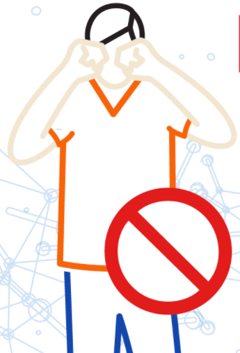
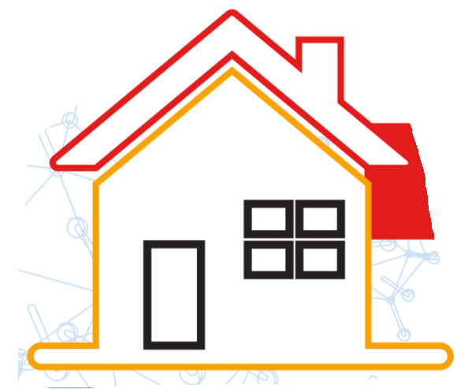
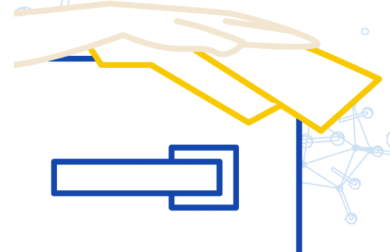
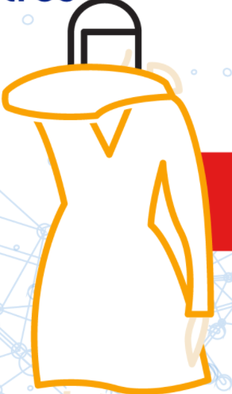
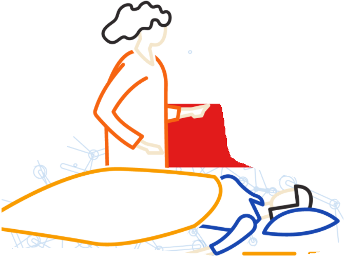

Si el COVID-19 se propaga en su comunidad, manténgase seguro mediante la adopción de algunas sencillas medidas de precaución, por ejemplo,
mantener el distanciamiento físico, llevar mascarilla, ventilar bien las habitaciones, evitar las aglomeraciones, lavarse las manos y, al toser,
cubrirse la boca y la nariz con el codo flexionado o con un pañuelo.
Lo anterior mencionado son solo algunos ejemplos de lo que podemos hacer para evitar contagiarnos con este temible virus, pero aqui les compartimos
algunas medidas 100% recomendables a seguir para cuidarnos tanto a los que nos rodean, como a nosotros mismos.
===== |
Medidas preventivas |
===== |
|---|---|---|
| EVITAR CONTACTO FÍSICO | Evitar saludar ni de beso ni de mano. Además, evite tocarte los ojos, nariz y boaca con las manos sin lavar. |
 |
| EVITAR SALIR DE CASA | A menos que sea sumamente necesario, evita salir de casa o estar en lugares públicos y muy concurridos. |
 |
| LIMPIAR Y DESINFECTAR SUPERFICIES | Limpia y desinfecta los objetos y superficies con las que tienes contacto. Evita compartir vasos, platos y artículos de uso personal |
 |
| PROTEGER A OTROS I | Al toser o estornudar sobre tu boca y nariz con la cara interna del codo o usa un pañuelo. |
 |
| PROTEGER A OTROS II | Si tienes fiebre, tos o dificultas para respirar quétade en casa. |
 |
| FOMENTAR EL RESGUARDO EN CASA | Promueve el trabajo desde casa para evitar el uso de transporte público o lugares concurridos. |